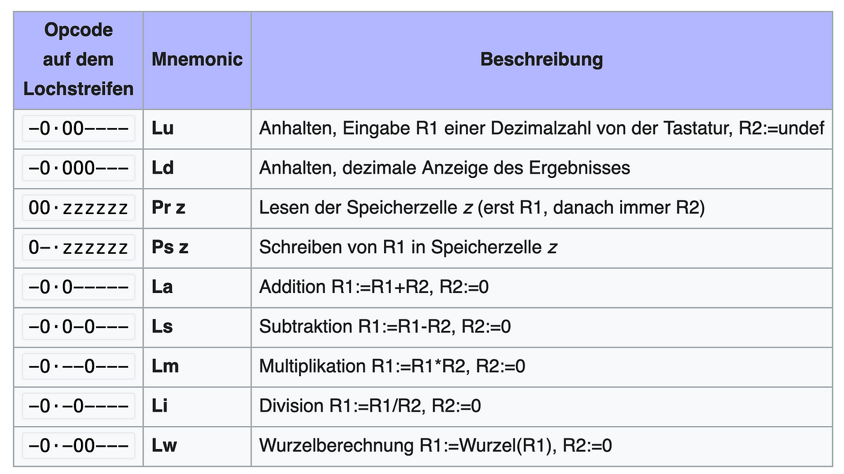

Table of Contents
Der Befehlssatz einer CPU ist so etwas wie die natürliche Sprache der Maschinen:
Die - ehrfürchtiger Trommelwirbel - Maschinensprache!
Sie besteht aus sehr einfachen Instruktionen, die die CPU direkt verarbeiten kann. Die sogenannten operation codes, OpCodes, sind Hexadezimal-Werte, die als Verweis auf diese Instruktionen dienen.
OpCodes werden wiederum durch Mnemonics repräsentiert, eine etwas besser lesbare Beschreibung des Befehls. Die Menge der Mnemonics ergibt die Assemblersprache.
Für den 8-Bit-Prozessor Z80 gibt es z. B. den OpCode 0x04, der durch den Mnemonic INC beschrieben wird. Damit wird der Wert des Registers B um 1 erhöht — also eine sehr einfache Addition.

(OpCodes dürfen nicht nur durch hexadezimale Werte repräsentiert werden, aber das geht jetzt zu weit…)
Mnemonics erhöhen zwar die Lesbarkeit, aber effizientes Programmieren, Fehlersuche und Codepflege sind auch in Assembler nicht die oberste Priorität. Dafür gibt es höhere Programmiersprachen, die den Assembler-Code in noch lesbarere Funktionen übersetzen und zusammenfassen und so ein strukturiertes Programmieren ermöglichen.
Eine native Instruktion im Maschinencode ist weitaus performanter als die zusammengesetzte Funktion einer höheren Programmiersprache. Ein OpCode wird von der CPU ohne Übersetzung verstanden. Eine JavaScript-Funktion muss erst interpretiert und in verschiedene OpCodes aufgelöst werden.
Das heißt aber auch: Operationen, von denen man schnelle Ergebnisse benötigt, werden direkt im Maschinencode implementiert. Dazu gehören die Klassiker unter den logischen und mathematischen Operationen, wie XOR, INC, AND sowie… POPCOUNT.
…POPCOUNT? Nie gehört!
POPCOUNT steht für „population count" - und population meint Bits. Damit lässt sich die Anzahl der gesetzten Bits zählen. Bei dem folgenden Wert ist die Anzahl der gesetzten Bits 3:
100100110
Warum als Maschinencode-Instruktion?
Bereits 1952 erwähnte niemand geringeres als Alan Turing eine Funktion mit dem Symbol /R (“sideway adders”). Turing verfasste damals das Handbuch für den Ferranti Mark 1, nach dem Zuse Z4 dem zweiten kommerziell verfügbaren “Universal-Computer”. Er beschrieb die Anweisung knapp mit:
This function determines t (s), the number of 1’s in [s] (it has no relation to the interpretation of [s] as a number) and adds it to M.
~ Alan Turing in Programmers’ Handbook for the Manchester Electronic Computer Mark II
(Der Ferranti Mark I wurde vom britischen Unternehmen Ferranti Limited gebaut.)
In den USA lässt sich eine vergleichbare Funktion erst im Jahr 1961 nachweisen — damals noch unter dem Mnemonic AOC: all ones count. AOC war Teil des Befehlssatzes des IBM 7030 “Stretch” , IBMs erstem Supercomputer auf Transistorbasis. Auch AOC ermöglichte, alle Einsen im Ergebnis einer logischen Operation zu zählen ( Quelle: IBM 7030 STRAP-II Handbuch, bitsavers.org ).
Stretch war bis 1964 der schnellste Computer der Welt und wurde dann vom CDC 6600 abgelöst, der POPCOUNT über den OpCode CXi implementierte. Seit 1992 geistert die Legende durch das Internet, dass diese Funktion auf Geheiß der NSA eingeführt wurde — angefacht durch eine
Diskussion auf comp.arch
.
Die NSA-Legende
Angeblich war es Tradition, dass eines der ersten Geräte einer neuen, schnelleren Computer-Generation immer zuerst an einen ganz besonderen Kunden geliefert wurde:
It was almost a tradition that one of the first of any new faster CDC machine was delivered to a “good customer” — picked up at the factory by an anonymous truck, and never heard from again.
~ Jitze Couperus, 1999 ( cryptome.org )
Gerüchten zufolge handelte es sich bei diesem “guten Kunden” um die NSA. Dort nutzte man die Funktion angeblich zur Kryptoanalyse von abgefangenen Nachrichten. POPCOUNT spielt nämlich bei der Berechnung des Hamming-Gewichts eine gewichtige Rolle — pun intended. Mit dem Hamming-Gewicht bzw. Hamming-Abstand lässt sich die Ähnlichkeit zweier Zeichenketten bestimmen. So soll die NSA in der Lage gewesen sein, abgefangene diplomatische Kabel maschinell auf ähnliche Muster zu überprüfen.
Eindeutig belegen lässt sich diese schöne Geheimdienst-Räuberpistole naturgemäß nicht. Zwischen 1975 und 2005 tauchte POPCOUNT auch nicht mehr in den Instruktionen der CPUs auf.
Weitere Anwendungsgebiete
Tatsächlich gibt es noch andere Einsatzgebiete für POPCOUNT:
- Fehlererkennung in Übertragungsprotokollen
- Untersuchung von Molekülen in der Bioinformatik
- Komplexe Berechnungen für neuronale Netzwerke — ein wichtiger Baustein von Machine Learning und KI
Zusammenfassung
Was ist POPCOUNT, warum existiert es als CPU-Instruktion, und was hat die NSA damit zu tun? Die Geschichte hinter einer der ältesten Maschinencode-Operationen.
Hauptthemen: CPU Maschinensprache Assembler NSA Kryptografie Computergeschichte
Schwierigkeitsgrad: beginner
Lesezeit: ca. 5 Minuten